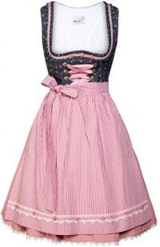
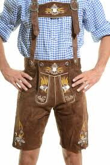
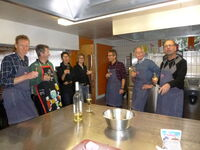
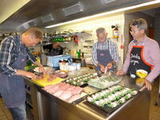
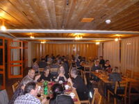
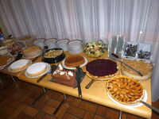

Alpinrunner Jahresrückblick
Samstag, 18. November
Wir feiern bei einem feinen, gemütlichen Nachtessen unter Lauffreunden mit Jahresrückblick und vielen Fotos
Die schönsten Fotos des Jahres sind zu sehen bei den Bildershows: vom Schneeschuhlaufen, Winterlauftraining, von der Laufwoche in Naturns/ Südtirol, von Wettkämpfen an Bergmarathons, und den Wochenendetrainings. Wir sehen uns das Jahresprogramm 2018 an und Informieren von unseren Vorhaben für das Nächsten Jahr. Traditionsgemäss wird das Leiterteam euch feine Köstlichkeiten zubereiten. Für das Dessertbuffet freuen wir uns auf süsse Mitbringsel. Günstige Übernachtungsplätze im Lehrlingshaus beschränkt vorhanden.
Auf besonderen Wunsch einiger Alpinrunnerinnen findet der Abend unter dem Motto "Herbstfest" statt. Dies bietet die Gelegenheit ein Dirndl auszuführen.
Herbstfest beim Jahresrückblick
-

-

-

-

-

-

Teilnehmer
- Marco & Petra Jäger
- Röbi & Maria Conrad
- Brigitte Eggerling & Thomas
- Dani Zähner & Sybille Domenig
- Michi Gisler
- Ruedi Wirz
- Thomas Tscharner
- Martin Lädermann
- Barbara Schuler
- Doris Schwarz *
- Joschi und Nartano *
- Ursula Baer *
- Monica & Peter *
- Ayhan Artan *
- Petra Bättig *
- Rösli Gisler
- Dani Ulrich
- Bea & Peter Altmann
- Corina Müller Nüesch
- Helen Arquint & Albert Thöni
- Marcus & Dorothée Federspiel
- Marc Homlicher
- Marie Eckert
- Helen & Rolf Jäger
- Bruno Günthardt & Thea Eichelberger
- Jean-Marie Zogg & Marilene Natterer
- Micheline Pang *
- Gerti Höllriegl
- Heinz Joos
- Michel Zogg